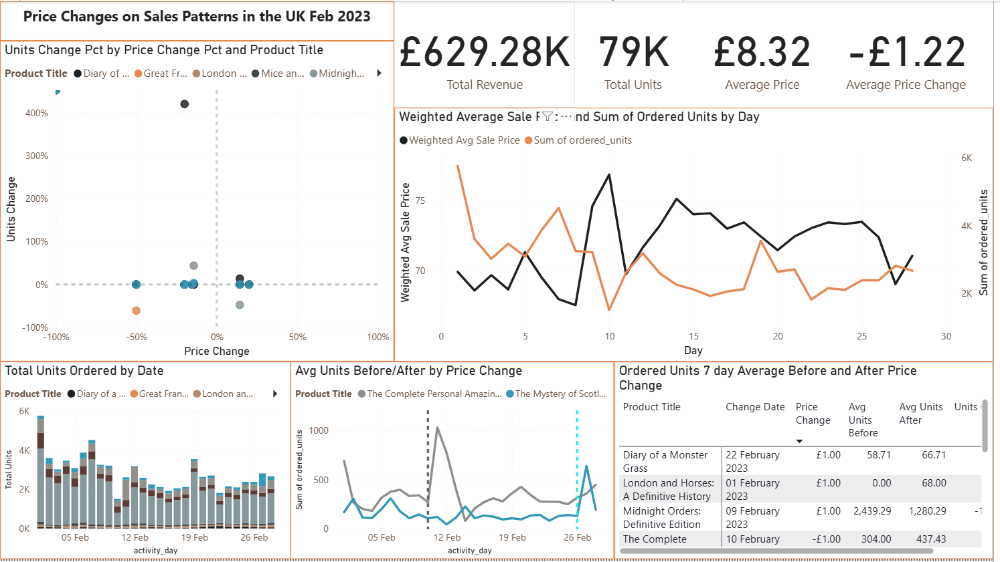
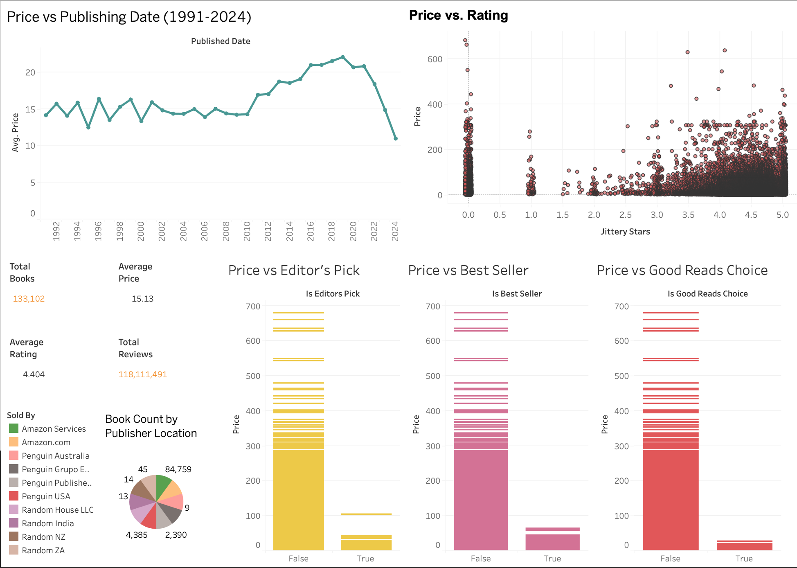
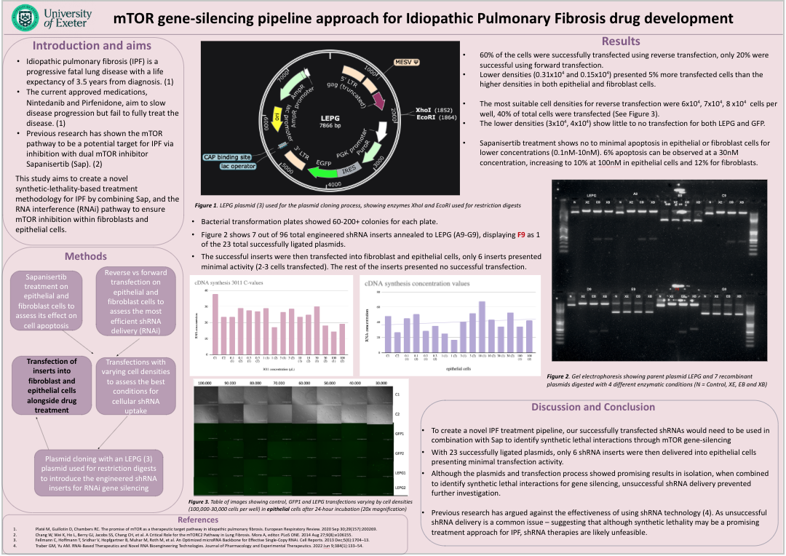

About Me
I am a Data Analyst and Biomedical Researcher with a First-Class Honours degree in Medical Sciences from the University of Exeter, currently enrolled at MIT in Data Science and Statistics.
I specialise in data cleaning, EDA, machine learning, and clear data storytelling through dashboards and visual reports.
From predicting molecular bioactivity and analysing patient risk to pricing models and SQL-based insights, I’m focused on using data to solve meaningful problems.
Outside of data and science, I’m a bookworm who enjoys both fiction and non-fiction, always looking for the places where stories and science intersect.
Data Analytics Projects
EDA on Penguin titles; cleaning/preprocessing price, ratings, and reviews; visualising price and rating distributions; TF-IDF keywords from titles to inspect pricing patterns.
Built a Tableau dashboard and a Random Forest regressor to predict e-book prices.
A full end-to-end analytics workflow that uses synthetic Penguin UK e-book pricing & sales data,
including raw and cleaned CSVs, SQL queries, Power BI dashboard, to visualise how pricing changes impact revenue, units sold, and demand sensitivity.
Random Forest regression to predict molecular bioactivity (pIC₅₀) from ECFP4 fingerprints. Includes EDA, stratified splitting, and feature importance to highlight substructures driving activity.
A set of SQL exercises and mini-projects focused on querying, joins, window functions, and reporting.
A commercial analysis workflow that generates an Excel workbook with acquisition P&L models, forecast vs actuals reviews, list shape reporting, schedule risk checks, sales performance, and advances recoupment.
Synthetic clinical dataset; EDA of key variables; multinomial logistic regression to classify Low/Medium/High risk by age, diagnosis, and length of stay (overall accuracy ~88%).
Posters & Dashboards

This dashboard visualises how February 2023 price changes influenced Penguin’s UK sales, revealing patterns in revenue, unit demand, and title-specific price sensitivity (synthetic data)

Interactive dashboard exploring Penguin e-book pricing, popularity, and publisher behaviour. Download the
.twb file from the repository.

Visual summary of a study investigating targets for Idiopathic Pulmonary Fibrosis via pathway enrichment and target prioritisation.